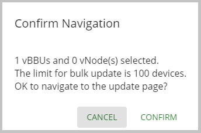

Perform a Bulk Update Action on a vBBU
Use this task to perform a bulk update action on one or more vBBUs.
-
Use any of the following ways to access the Device Summary window:
- Log into the PW EMS, this window displays by default.
- From the navigation bar, click Dashboard.
- From the navigation bar, click Devices > Device Summary.
- In the Device Summary window, in the Actions column, check the check box next to any vBBU device(s) on which you want to perform a bulk action.
- Click BULK Actions. In the drop-down list that appears, select Update.
-
In the Confirm Navigation dialog box, click CONFIRM. For
example:

-
In the Bulk Actions Update window, complete the following fields that
are applicable to your bulk update in the SYSTEM PROFILES tab that
displays by default:
Name
Description
Profile Type drop-down list Select from the following system profile types: - DownlinkQoS - This profile applies a Differentiated Services Code Point (DSCP) to data traffic from the HNG to access network devices, such as the RRH.
- DownlinkShaping - This profile applies a DSCP to data traffic towards access devices such as an RRH from the HNG.
- GsmConfig - This Global System for Mobile communications (GSM) profile is for a Converged Wireless System (CWS) access node, which performs as a multi-carrier node that operates as a standalone base station or Remote-Radio Head (RRH) connected to this vBBU.
- HeartBeat - This profile is for cell heartbeat monitoring.
- Logging - This profile is for system logging.
- PkiSecurity - This profile is for system security, which includes the PKI certificate parameters required for server authentication.
- QosUplink - This profile applies a DSCP to data traffic to the HNG from an access network devices profile that you created.
- StatsInterval - This profile is for cell statistics monitoring.
- TrShapingUplink - This profile is for network traffic shaping, which categorizes access network traffic.
Profile Name drop-down list Select an profile name for the system profile type that you selected. System profile names appear only if there is a user-defined system profile for the Profile Type. - Once a system profile name is selected, parameters display below. Use the search field to find specific system profile parameters to edit or make changes to the displayed parameters. Refer to the Configure System Settings for Devices chapter for more information about specifying these parameters.
- Click UPDATE. A bulk update is made for any system profile parameter changes that you made for the vBBU(s) that you selected.